まんだら遊苑/富山県立山町
富山の人々の精神的支柱、立山。 その神々しい姿は立山信仰という独特の信仰を生み出した。 その立山の麓に何やら妖しい施設があると聞いて行ってみた。その名はまんだら遊苑。妖しさ大暴走のネーミング。 ここは富山県立山博物館という、ちゃああんとした真面目な博物館の付属の施設である。 立山信仰といえばまず思い浮かぶのが立山曼荼羅。立山は現在の信仰形態が確立する遥か以前から死者の山とされていた。 その山中他界観をベースに神仏合習の山岳信仰が乗っかったのが立山信仰なのだが、その教化のために描かれたのが立山曼荼羅である。 開山縁起・地獄・極楽・布橋灌頂会といった場面が描かれた立山の案内図で、立山登山の前にこれを見て予習するものだったのだろう。 図中には矢が突き刺さって流血している阿弥陀さんや牛や馬になった男、岩や木になった女など相当強烈なシーンが目白押しである。 立山登山の道中、この曼荼羅図を思い出し地獄や極楽を見い出したのであろう。立山登山とはまさに地獄極楽巡りの原形なのである。 ここのまんだら遊苑はその立山曼荼羅の世界を疑似体験してもらおうという趣向なのだ。つまり早い話が地獄極楽巡りなのだ。 苑内は地獄である地界と極楽である天界、それを繋ぐ陽の道などによって構成されている。 もちろん最初は地獄である地界。それでは立山曼荼羅の世界へレッツゴー！ ゲートを潜ると・・・早速始まってます。地獄世界。どこからともなくうおおおお〜ぬぅおおおおおお〜ぐぅおおおお〜と無気味なうめき声＆重低音のブート音が聞こえてくる。あちこちにスピーカーが仕込まれているようだ。 爽やかな朝の立山山麓に響き渡るうめき声。勿論客なぞ我々以外誰もいない。シュールだ。 さすがに真面目な博物館の付属施設ということもあってか宗教色を極限まで薄めた抽象的な地獄風景が繰り広げられている。 従って亡者が鬼にいたぶられて血がどっぴゃあ〜とか生首ピュ〜ん的な残虐シーンは一切なく、チビッコでもトラウマにならず安心して地獄体験が出来るという寸法だ。しかしそこは地獄だけあってガキンチョにナメられない程度には恐怖感を演出している。 まずは閻魔堂と呼ばれる屋内アトラクションへ。 中に入ると室内は赤一色の世界。赤い照明に赤い壁。所々フラッシュライトが点滅しており、かなり強烈な印象。 一画にある鐘を突いたらそれは地獄巡りのスタートの合図。 ちなみに先程から聞こえていたうめき声とブート音はここから聞こえていたのだ。かなりの音量のうめき声と赤が混乱し乱反射する空間。そしてひと一人がやっと通れる狭い通路などを歩いていると段々精神状態がミニマルになってくる。視覚だけでなく聴覚、嗅覚（時々変な匂いがする）、空間感覚などから地獄を想起させるようになっている。 のっけからナンですが閻魔堂内は撮影禁止。こんな感じでした。 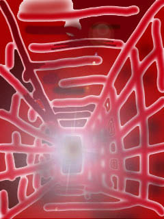 地獄ノイズと赤い空間を抜けるとそこは屋外。 地獄の風景が一望出来る。 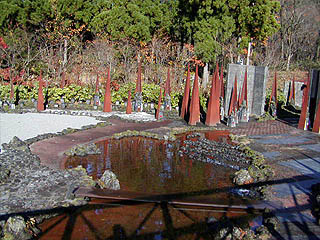 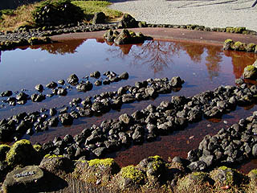 餓鬼の針山、水泡鬼と呼ばれる地獄である。 針山にも小さなスピーカーが仕込まれていてぬぅおおお〜ぐぅおおおお〜といううめき声が聞こえて来ていかにも地獄、という凄く嫌〜な感じがするサウンド。 このまんだら遊苑のデザインは建築家六角鬼丈氏。通常の地獄極楽巡りから思えば抽象的でオシャレな地獄だが、建築界の異端児、といか様々な物議をかもした作品を作っている建築家で、かなりはっちゃけた建物を世に送り続けている建築界の要注意人物だ。 東屋の下には地唸鬼（ちてんき）と呼ばれる井戸のようなモノ。 この井戸に向かって叫ぶと、その声が恐ろしい声にエフェクトされて再生され、少し離れたスピーカーから聞こえてくる。 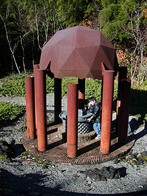 地獄の井戸に夢中になる我が愚息。 「こんにちは〜」→「・・・ごんにぢばぁああああ〜」 「じゃあ・・・うんこ〜」→「・・・ゔんぶおオオオォォ〜」 「ぎゃははは、ダッセー」→「・・・ギュボボボ、だっぢぇぇぇ〜」 コラァ！おのれは地獄行きじゃあ！ 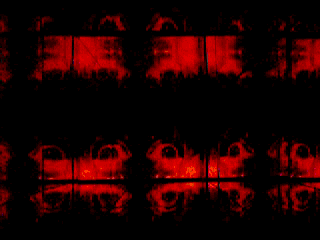 ←井戸の中はとっても素敵な万華鏡♡
お次は水窟鬼。丸い扉を開けて中に顔を突っ込むと八寒地獄の音と匂いが体感出来るというもの。 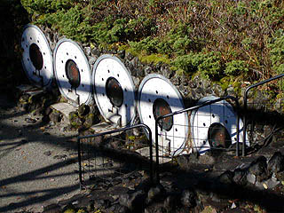 地獄の匂いは・・・あんまり匂わなかった。何か森の芳香剤みたいな感じだったような気がしたのだが地獄がいいのか、それで。 地獄といえばもっと凄い匂いがあるじゃないですか、ホラあんなニオイとかこんなニオイとか。あえて具体的には言わないが。 これは精霊橋。 成願寺川に突き出た橋。橋と言っても対岸に渡るわけではなく、先端まで行ったらまた戻ってくる展望台のようなモノ。 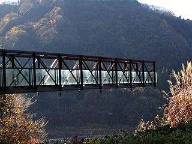 足元の床が透け透けなので先端付近はかなり怖い。高所恐怖性の人にとってはまさに地獄かも。 先端には鐘があり、地界を廻って来た人達を救済するための鐘だそうで、ここで一応地獄巡りは終了、という事になる。 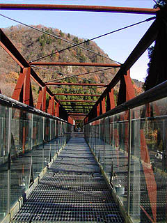 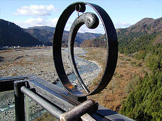 人間が持つ視覚、嗅覚、聴覚、触覚、空間感覚などをイヤな方向にいじられた感のあるこの地界巡りは従来の視覚に頼った地獄巡りとはひと味違った地獄巡り体験で、結構面白かった。 視覚により恐怖感を煽る従来の地獄巡りの手法より、ここの地獄の方が妙にイヤ〜な後味が残って、より地獄らしいのかも知れない。 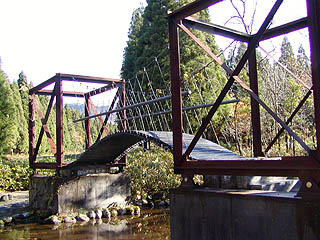 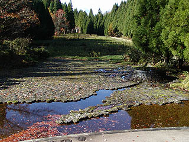 で、太鼓橋を渡るとそこからは極楽である天界に向かう陽の道と呼ばれる遊歩道。 途中、様々なオブジェなどがあり、立山登山の道中を模している。 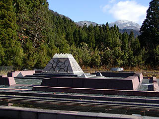 しばらく歩くと天界が見えてくる。まずは天界広場。中央には立山を模したオブジェが。 後ろに見える本物の立山と比べるとナメてるのかと思える程フザけたオブジェだ。 この広場の地下に天界が広がっている。広場左脇のスロープを下って行くとクランク状の通路があり突き当たりには幾つかの小部屋がある。 そこにはいくつか現代美術の作品が展示されている。 ここにある作品は天界をイメージした作品という説明だったが、地獄の方に置いた方がいいんじゃないのか？と思いました。ハイ。 さらに進むと奏楽洞と呼ばれる8つの変わった楽器が並べられた部屋に着く。 そして次は大きな卵型のブースがある天至界。10人以上は入れる大きさの卵の中で心静かに瞑想して下さい、的な施設だ。 中に入ると照明が様々な色に変化していてとても心地よい。うん、これは極楽っぽいぞ、と思いながら寝転んでいたらホントに寝ちゃいました。 こんな感じだったと思います。 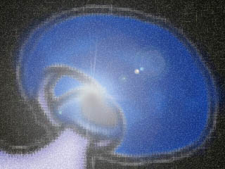 で、最後は天界から現世に至るための闇の道。時折妖しい照明が灯る薄暗いトンネル状のチューブを歩いていく。胎内潜りのようなものか。 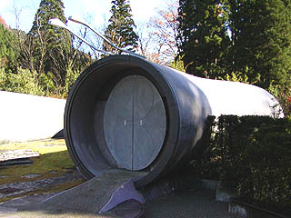 しばらく歩くとポンと外に出る。これで地獄（地界）極楽（天界）巡りは終了である。 ちなみにこの闇の道は逆方向には行けないのでもう一度苑内に入る事は出来ない。各アトラクションを見落とす事のない様に御注意願いたい。 あ、アレ見逃した！とかいっても、もう戻れませんから。 結論としてやっぱり極楽よりも地獄のほうがインパクトが大きかった。 いくら抽象的な地獄極楽巡りといえども脈々と続く地獄極楽界の永遠のお約束を超越する事は出来ませんでしたね。フフフ・・・ 極楽を地獄と同じボリュームでつくった功績は認めるが、いかんせん地獄のネットリとしたイヤ〜な感じに比べるとどうしても淡泊な感じは否めない。 これは仏教の教え云々とか地獄極楽云々という以前の問題で、人というものは元々、快適さや幸せよりも苦痛や不幸の方を見てみたいという欲求の方が強いのではなかろうか？こーゆーの性ってゆーんですか？ ニュータイプの地獄極楽巡りとしては大変興味深い物件であった。
・・・ところで。 このまんだら遊苑、最初に述べた通り、富山県立山博物館の付属施設である。 えええっ！っということは県立の地獄極楽って事かい！ 本当にいいんだろうか？ あえて表明しておくと私は地獄極楽巡りが大好きである。ただしそれは個人的なことだ。選挙権もあり、納税もしている一社会人としては地獄極楽への公的資金導入はいかがなものであろうか？との疑問も頭をよぎったりする。 休日なのに客は我々だけだったし、その割には結構あちこちに説明係のお姉さんがいたり（説明係がいなかったら何がなんだか判らないところが多いので必要ではあるのだが）、結構維持にコストかかりそうだし、結論としてかなりイタい施設つくちゃったなあ〜という気がしてならない。 いや、あたしゃ近所にあったら年間パスポート（勿論そんなものはないが）買って毎日来たい位気に入りましたけどね。ホラ、中には政教分離とか言う人もいるじゃないですか。そういう議論もあったかなかったか知らないけれど地獄極楽建設にこぎ着けた富山県、偉いぞ！ ・・・とここまで書いて気付いたのだが・・・ あああっ！富山県立山博物館じゃなくて富山県立山博物館だったあ〜！
2003.11.
珍寺大道場 HOME